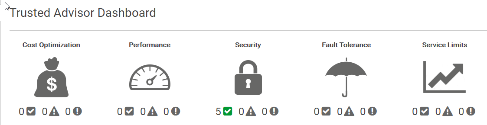
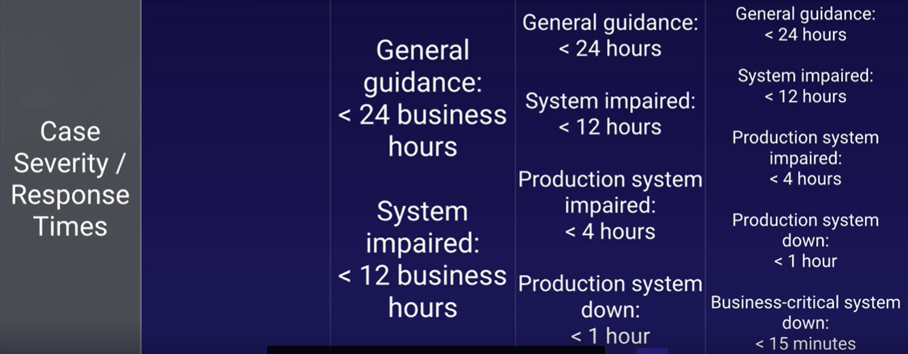
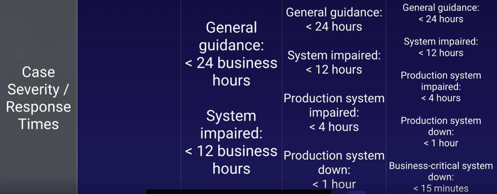

6. Management and Governance¶
OpsWorks¶
AWS OpsWorks implemet a configuration management system for automated deployment of instances, services and applications
- OpsWorks Stacks: (default) collection of layers on-premises
- OpsWorks for Chef Automate: cookbooks contain recipes/layers in the cloud
- OpsWorks for Puppet: master servers with preconfigured modules/layers in the cloud
pre-built layers
- Ruby
- PHP
- Node.js
- Java
- Amazon RDS
- HA Proxy
- MySql
EMR (Elastic MapReduce)¶
web service that makes it easy to process large amounts of data efficiently, mapping the process to multiple processors to reduce computing. Sample of big data
clusters nodes:
- master: coordinates job distribution and store logs by default
- core: run tasks assigned by the master node and store data in the cluster
- task (optional): runs only task that do not store data
logs must be defined on cluster creation
Export, Import, Query, and Join Tables in DynamoDB Using Amazon EMR
Systems Manager¶
View and manage AWS resources in the cloud (EC2 fleets) or on premise (virtual machines)
SSM (Systems Manager) Parameter Store¶
Centralized storage and management of your secrets and configuration data such as passwords, database strings, and license codes. You can encrypt values using KMS, or store as plain text, and secure access at every level.
organize parameters into hierarchies
Create Parameter from SSM Parameter Store
{ "Version": "2012-10-17", "Statement": [ { "Effect": "Allow", "Action": [ "logs:CreateLogGroup", "logs:CreateLogStream", "logs:PutLogEvents", "ssm:GetParameter*", "ssm:GetParametersByPath" ], "Resource": "*" } ] }
import json import os import boto3 client = boto3.client("ssm") env = os.environ["ENV"] # env variable value = "prod" app_config_path = os.environ["APP_CONFIG_PATH"] # env variable value = "acg" full_config_path = "/" + env + "/" + app_config_path # /prod/acg def lambda_handler(event, context): print("Config Path: " + full_config_path) param_details = client.get_parameters_by_path( Path=full_config_path, Recursive=True, WithDecryption=True ) print(json.dumps(param_details, default=str))
CloudWatch¶
Create Alarms to Stop, Terminate, Reboot, or Recover an Instance
Monitor resources and applications performances from the cloud and on-premises systems based on logs and events:
- compute
- ec2 instances - every 5 minutes by default
- autoscaling groups
- ELB
- Route53 health checks
- storage and content delivery
- EBS - virtual hard disk
- Storage gateways
- CloudFront
- network
AWS can see that you have Memory, but a custom metric is required to see how much of the memory is being used
AWS can see how much of CPU you are using in a EC2, but cannot see what you are using if for.
CloudWatch logs insights adds cross log group querying
CloudTrail¶
Continuously log your AWS account activity monitoring API calls per account and region
- data is retained for 90 days
- logs can be stored in a single S3 bucket
- read activity in the S3 bucket will be easier than using the API
Trusted Advisor¶
Recomendations and advices (not only EC2 instances). It helps you optimize cost, fault-tolerance, perfoemance, security and more.

Organisations¶
AWS Organizations enables you to centrally manage billing, control access, compliance, and security, and share resources across multiple accounts in the AWS Cloud.
You can consolidate all your AWS accounts into an organization, and arrange all AWS accounts into distinct OUs (Organizational Units).
- Provides single payer and centralized cost tracking
- Lets you create and invite accounts
- Allows you to apply policy-based controls
- Helps you simplify organization-wide management of AWS services
- Or you can create an organization with only consolidated billing features.
After you create an organization, you cannot join this account to another organization until you delete its current organization.
- From AWS Organisations,
create organisation
Enable AWS Single Sign On to centrally manage access to multiple AWS accounts and business applications. Create an organization trail in AWS CloudTrail to log all events for all AWS accounts in your organization.
- From
Organize AccountsTab, we create a new organisational units - From
Policiestab, enable service control policies and create a sample policy to block EC2 usage.- Select Amazon EC2 statement and deny effect
- Apply the new policy to organisational units or to AWS Accounts
Maximum of 20 Link accounts. Contact AWS for more
Assuming all instances are in the same AWS Organization, the reserved instance pricing for the unused on demand instances will be applied.
Landing Zone helps to quickly setup a secure, multi-account AWS environment based on AWS best practices.
services control policies for central control over all of the permissions
AWS Config¶
AWS Config provides an inventory of your AWS resources and a history of configuration changes to these resources.
You can use AWS Config to define rules that evaluate these configurations for compliance.
How to get started:
- Specify the types of AWS resources you want AWS Config to record
- Define the Amazon S3 bucket to which it sends files
- Set the Amazon SNS topic to which it sends notifications
- Define config rules
- Restart EC2 instances and check AWS Config results
You are charged based on the number of configuration items recorded, the number of active AWS Config rule evaluations and the number of conformance pack evaluations in your account
Pricing¶
- Capex: Capital Expenditure: you pay up front. It's a fixed cost
-
Opex: Operational Expenditure: you pay for what you use, like electricity, gas or water
-
Budgets predict costs before they are incurred. Alarms can be set to monitor spending on your AWS account from
AWS Billingservice - BudgetsReceive Billing Alertsmust be enabled at Billing Preferences. -
Cost explorer is use to explore costs after they have been incurred. See Billing & Cost Management Dashboard.
-
Creating a billing alarm at
ClouldWatch/Alarms/Billingusing SNS (Simple Notification Service) topic to monitor estimated AWS charges.
Application Integration/SNS is a messaging service that enables you to decouple microservices, distributed systems, and serverless applications. Using AWS SNS topics, your publisher systems can fan-out messages to a large number of subscriber endpoints for parallel processing, including Amazon SQS queues, AWS Lambda functions, and HTTP/S webhooks. Additionally, SNS can be used to fan out notifications to end users using mobile push, SMS, and email.
Application Integration/SQS (Simple Queue Service) offers a queue that lets you integrate and decouple distributed software systems and components.
Support Plans:
All accounts receive billing support
 

Pricing policies
- pay as you go
- pay less when you reserve
- pay even less per unit by using more
- pay even less as AWS grows
- custom pricing
cost drivers:
- compute
- storage
- data outbound (data leavingn, not data entering)
free services
- VPC
- Elastic Beanstalk
- Cloud Formation
- IAM
- Autoscaling
- Opsworks
- Consolidated billing
Create a paying account for billing purposes only. Do not deploy resources into the paying account.
Consolidated billing allows you to get volume discounts on all your accounts
Cost Calculators¶
- AWS Simple Monthly Calculator (DEPRECATED)
- AWS Total Cost of Ownership Calculator (DEPRECATED): comparing AWS VS on premise
- AWS Pricing Calculator
Cost Explorer¶
AWS Cost explorer is use to explore costs after they have been incurred.
- disable by default, it takes 24 hours to be enabled
- details are given before the end of the month bill...